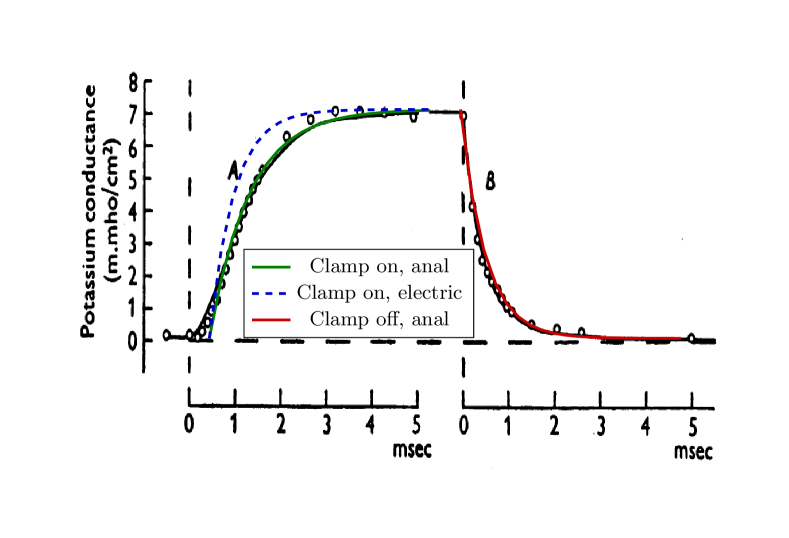
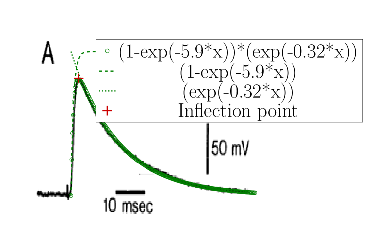

At the dawn of finding methods for describing neuronal operation, HH published high-precision measurements [26] enabling detailed testing of theories explaining the observed physiological behavior. Their good physical model that “movement of any charged particle in the membrane should contribute to the total current” lacked considering the mutual repulsion and finite speed of those particles (they are about 50,000 times heavier and a million times slower than the electrons, and they move in a closed space segment). Furthermore, they have started from the commonly used wrong assumption that conductance is a primary electrical entity. They could ”find equations which describe the conductances with reasonable accuracy and are sufficiently simple for theoretical calculation of the AP and refractory period”. The ”reasonable accuracy” and the need for a simple calculation method (performed on a mechanical calculator) obscured the fact that the laws for electrons are not the same as the laws derived for ions.
As discussed in connection with Eq. (1.20), the current depends linearly on the number of charge carriers . The physical processes changing the number of charge carriers also define the intensity of the currents, providing a way to imitate slow currents by fast currents (by using current generators using special function shapes), where the spatiotemporal time course of the physical process of producing ions in the system modulates the number of charge carriers.
As an example, we discuss the case of slow current traveling in an axon. The ions travel a finite distance with a finite speed, so there must be a delay between their entry and exit times. The case of switching a clamping voltage on, to some measure, is analogous to the arrival of a spike. Initially, the axon contains no ions. In the classical picture, the axonal current flows into the membrane with capacity and increases the membrane’s voltage with a time constant
| (1.31) |
that generates a change in the membrane current
| (1.32) |
where is the conductance of the membrane. That is, the measurable current equals the product of the conductance and the clamping voltage. Equs.(3)-(5) in [26] express this relation. If we assume that the axonal current is “fast”, we arrive at the wrong conclusion that the conductance is voltage- or time-dependent. In contrast, if we assume that the axonal current is “slow”, we naturally conclude that Ohm’s Law is correct and valid also for biology: the conductance/resistance is constant, but the number of charge carriers changes, see section 1.1.8.
There is no voltage-dependent conductance [29]. Instead, the finite speed of ions and the wrong assumption that conductance is a primary entity mislead physiological research. With wording that ”conductance changes”, one states that charge carriers appear/disappear/reappear; that is, the charge and mass conservation are not fulfilled. Claims such as ”the current cannot disappear, it has to go somewhere” [17], page 9, are wrong: there is no conservation law for current, which is the derivative of charge with respect to time. The correct physics background behind the early phenomenon [30] is that the number of charge carriers, at the cross section where the measurement is carried out, changes as a wave of ions with variable intensity moves slowly along the axon (they are apparently “created” for the static measurement arrangement). The changing conductance is a fallacy stemming from the idea of ”fast current”, which is valid for electrons but not for slow ions.
In contrast, when the clamping voltage is switched off, the axon is still filled with charge carriers. The resting potential reaches the end at the membrane “instantly” (in this situation, the conduction mechanism is similar to that in metals). The driving force disappears, the ion stream stops, and the ions discharge into the membrane. The lack and the presence of ions in the axon when switching clamping on and off, respectively, produce the difference that “conductances [actually, currents] increase with a delay when the axon is depolarized but fall with no appreciable inflexion when it is repolarized” [26]. The potential is equalized by the AIS current, producing a net exponential decay:
| (1.33) |
During the regular operation of a neuronal membrane, after opening the ion channels, a vast amount of ions flows into the intracellular space from the extracellular space, somewhat similar to the effect of switching a clamping voltage. The essential difference is that the ions arrive through the axon to the joining point in clamping. In contrast, through the membrane’s ion channels, they directly contribute to the current on the membrane’s entire surface. The membrane’s size is finite, so with a finite current speed, it takes time until the charges on the membrane’s surface arrive at the AIS, as discussed for the axonal current. Fig. 1.5 shows the measured rising and falling edges of the clamping experiment performed by HH [26]. The continuous lines show the diagram lines fitted to the experimental data (notice again that the fitted polynomial significantly differs from the correct exponential function around the time 0.5 msec); the dashed line shows the expected result of the rising edge, calculated with the time constant of the falling edge. The number of charge carriers follows a saturating curve, which decreases the current in the axon. HH measured that their time constants differ far outside their experimental error, which would not be possible if they were the result of the charge-up and discharge of the same oscillator circuit. The measured rising edge corresponds to a charge-up process where the charge-up current is a saturating curve due to the change in the number of charge carriers in the axon; see Eq.(1.23).

The slow input currents (although due to slightly differing physical reasons for the different current types) are described by the following analytic form valid for fast currents:
| (1.34) |

where is the current amplitude per input, and and are timing constants for current in- and outflow, respectively. They are (due to geometrical reasons) approximately similar for the synaptic inputs and differ from the constants valid for the rush-in current. To implement such an analog circuit with a conventional electronic circuit, voltage-gated current injectors (with time constants around 1 msec) are needed. For example, see in Fig 1.6 the PSP measured function shape published in [31], fitted with our theoretical function Eq.(1.34). The corresponding voltage derivative is as follows:
| (1.35) |